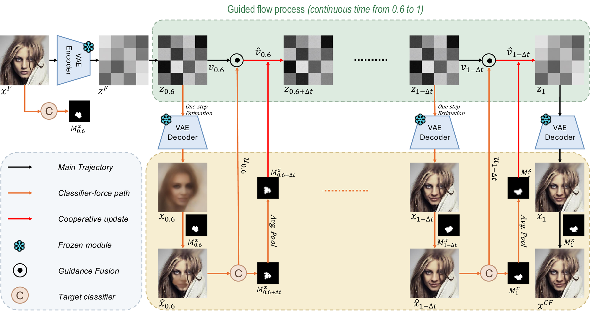
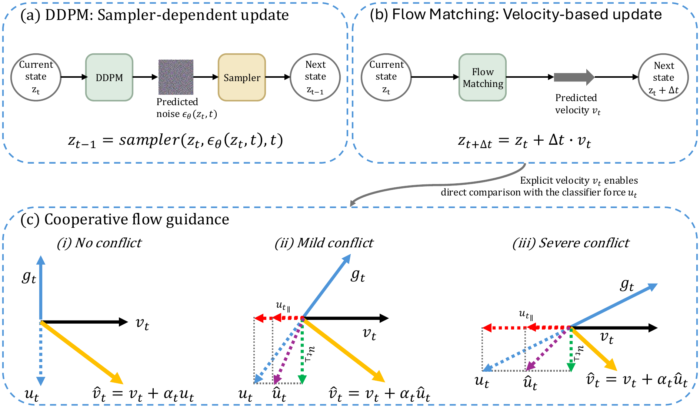

Starting from a partially noised factual latent, CLEAR evolves a single latent trajectory along a guided flow. At each step, the flow model provides the generative velocity and a one-step image estimate, from which the frozen target classifier produces both the classifier force and the current decision-relevant support. Cooperative Flow Guidance determines how the classifier force modifies the generative direction, while Adaptive Support Preservation determines where the modification is allowed.

Overview of CLEAR. Repeating these coupled updates yields a counterfactual that concentrates changes within the evolving editable support while preserving decision-irrelevant factual content.
Cooperative Flow Guidance
Flow Matching predicts an explicit instantaneous velocity vt, which can be compared directly with the classifier force ut = −gt, unlike the sampler-dependent updates of DDPMs. CLEAR decomposes ut into components parallel and orthogonal to vt, and attenuates only the opposing parallel component, with a strength that grows with the degree of conflict. Cooperative guidance is therefore preserved, and only harmful conflict is suppressed.

From sampler-dependent denoising to cooperative flow guidance. (a) In DDPMs the update direction depends on the chosen sampler. (b) Flow Matching directly predicts the velocity vt, an explicit generative direction. (c) Under mild or severe conflict, CLEAR increasingly attenuates only the opposing component as the conflict strength grows.
Adaptive Support Preservation
CLEAR estimates the editable support with target-class Grad-CAM on the classifier view, keeps the top salient pixels, extracts the largest connected component and dilates it. The support is refreshed at every step, so it adapts as the counterfactual evolves. Average-pooling it to the latent grid yields a soft gate: classifier-driven updates act inside the support, while the rest of the latent follows the original flow. Finally, the factual pixels outside the final support are copied back, so that VAE reconstruction cannot alter them.